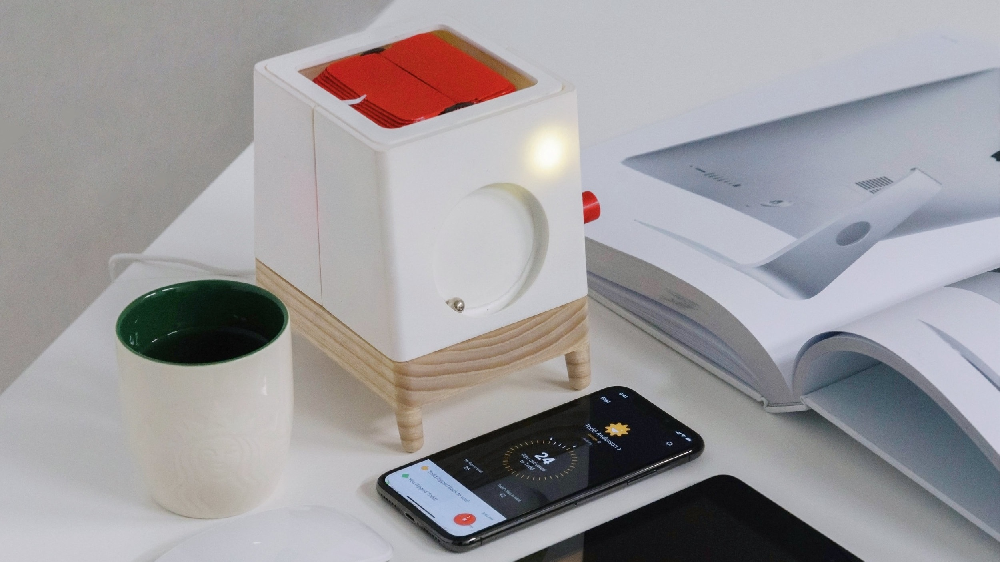
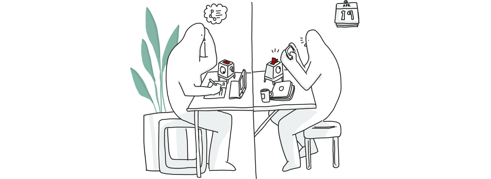

Service & Interaction Design
Augmenting peer-to-peer interaction in online learning
Tangible Interaction · Post-COVID education
Solo project
Role
Interaction Designer
(mobile app, table-top porduct)
Tasks
Research
Wireframing
Prototyping

TL;DR
Millions of people around the world now use online learning as a convenient and inexpensive alternative to classroom-based education (Dhawal Shah, 2017). Despite these advantages, online courses suffer from high drop-out rates. Approximately 90% of all students do not complete their online course (Hong Lu, 2007).
Prior research has suggested the limited opportunities for social interaction between students may contribute to these undesirable outcomes (Boud et al., 2014), (Cercone, 2008). Especially, tangible interaction methods such as data physicalization or tactile communication are evaluated as beneficial for social interaction among students through helping the perception of information through implicit, expressive signifiers (Gaver, W. W. et al., 2013).

Would you like to know more about the project?